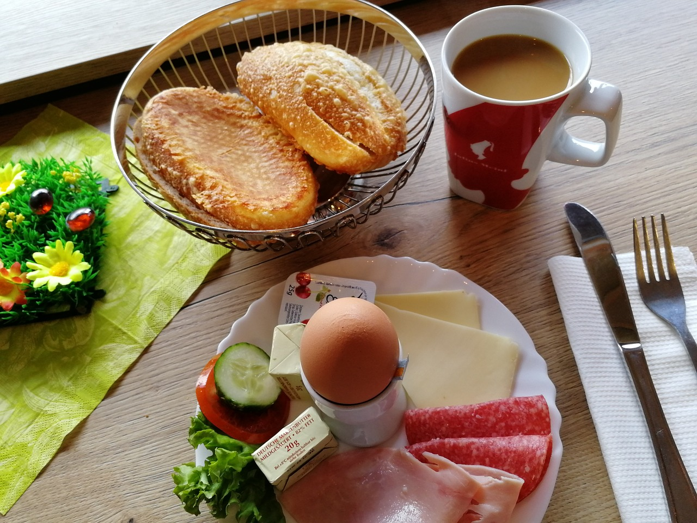

Mejora tu Ingles, escucha sin parar tus actividades

- BREAKFAST Desayuno
- What do you have for breakfast? ¿Que tomas para desayunar?
- From Monday to Friday I only have a coffee and a small piece of toast. De lunes a viernes yo sólo tomo un café y una pequeña tostada.
- But on Sunday, when I have more time in the morning, I like to have a big breakfast. Pero el domingo, cuando tengo más tiempo por la mañana, me gusta tomar un gran desayuno.
- I have fresh orange juice, an egg...or maybe two eggs, and two pieces of toast. Tomo zumo de naranja fresco, un huevo ... o tal vez dos huevos, y dos rebanadas de pan tostado.
- I put tomato and olive oil on my toast. Echo tomate y aceite de oliva en mi tostada.
- I love Sunday breakfast! ¡Me encanta el desayuno del domingo!